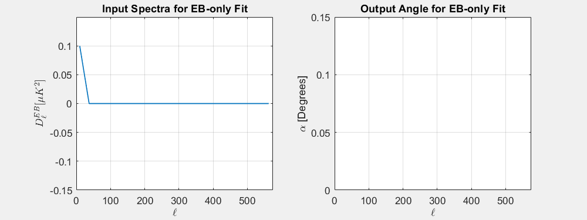
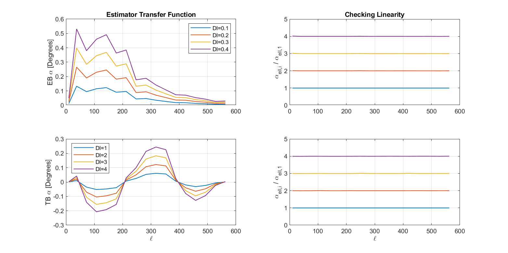

Isotropic Polarization Rotation Analysis: Global Polarization Rotation Fits on Standard B2018 Sims
—
J. Cornelison
Introduction
Recreation of B2018 Sims
I've now included B18 into these pagers. I am also now crossing CMB T&E with B for Dust-only and Noise-only signal types.
The pager below shows EB/TB angular power spectra (APS) for both B2018 (sernum 3553) and my sims (B2018-rerun, sernum 6600) where I visually compare the means. To see if it can improve the fits to EB/TB spectra, I also apply the B18 purification matrix -- which was created from the combined B2016, B2017, and B2018 -- to both sets of sims.
B18 - the ensemble of 499 B18 sims created for the BK18 analysis (i.e. sernum: 3553, daughter: fgh)
B2018 - the ensemble of 499 B2018 sims created for the BK18 analysis (i.e. sernum: 3553, daughter: h)
B2018-rerun - An ensemble of 10 B2018 sims I ran myself (sernum: 6600, daughter: h).
A pager of EB/TB APS of my 10 sims compared to the 499 sims generated for B2018. The gray lines indicate one realization and the black line indicates the mean of all realizations per-ell.
Switching between the two simsets for any signal-type, we can see that my reproduction was successful. We can also see qualitatively that the purification matrix does a great job of reducing E-to-B leakage which should reduce the variance on α estimates.
Global Polarization Rotation fits to B2018 Sims
Now I perform the global rotation fits on each of the sims.
I estimate α for each individual sim following the procedure outlined by Eric Bullock in :
Load in a real final file and sim APS.
Apply the suppression factor from the real data to the sim APS.
Swap the real APS for the sim APS in the final file.
Pass the final file through reduc_global_rotation to fit for the angle.
This method ensures that each simmed APS has the same suppression factor and bandpower window function (BPWF) applied as the real data and also that the fit is properly normalized by the bandpower covariance matrix (BPCM).
Histograms of α estimates for B2018 and my B2018-rerun for each EB/TB fit type; per signal type; and with and without matrix purification.
Signal Type
Variance [sq-deg]
Lensed-LCDM
0.0036
Noise
0.0104
Dust
0.0003
σ2L+σ2N
0.0140
σ2L+N
0.0135
σ2L+σ2N+σ2D
0.0143
σ2L+N+D
0.0139
Table of B2018 variance on alpha from EB fits
The sum of the variances between Lensed-LCDM, Noise and Dust correspond to the variance on the coadded spectra to within 4%.
Estimator Transfer Function?
Now we need to get an idea of which bandpowers matter most in our alpha estimations.
I do this by injecting a dummy signal into an EB or TB spectra bandpower-by-bandpower whilst keeping all other bandpowers at zero and then estimating alpha (see below figure).


Conclusions
By fitting rotation angles to our standard suite of sims, we now have answers to the questions we asked in §1:
Are estimates of α for these sims zero as expected?
Estimates are all consistent with zero within the standard deviation, but not within the error-on-the-mean.
Given that matrix purification improves this, it's possible that this inconsistency can be attributed to imperfect cleaning of the E→B leakage due to mode-mixing, perhaps from using a purification matrix that was intended for the 3-year dataset on a single year's data.
Follow-ups to this are: seeing if non-zero means are still present when using toy models of uncorrelated sample variance in EB & TB spectra; and seeing if the mean α in the three-year dataset exhibits the same symptoms.
What is the expected statistical uncertainty on α? What are we limited by?
We can see from Figure 3.1 that, in the absence of dust and noise, our absolute minimum uncertainty is σα~0.05° from lensing. If we want to go lower, we'd need to delense.
In the B2018, we are dominated by in BB power by noise by a factor of ~3 at ℓ=200. A rough estimate tells me that we'll still be dominated by noise using using the three-year dataset by a factor of ~2 assuming BB power drops as 1/√N.
How do the uncertainties from Signal/Noise/Dust contribute to our overall uncertainty on α?
§3.1 shows that, for cases with CMB signal, σα scales with BB-amplitude.
Next Steps
Follow-ups to this posting include:
Looking at B18 α estimates with and without matrix purification
Running pseudosims through the angle estimator explore how EB and TB are related
In parallel, we are also going to start fitting α to sims in which different polarization angles are used during the TOD-making and mapmaking phases which should provide insight to any systematics that might enter through the polarization angles.
Appendix
Footnotes
Click on the number to return to the main text.
[1]
A more recent global rotation posting for BK18 exists, but to remain blind in this analysis I have not looked at it and do not link it here.